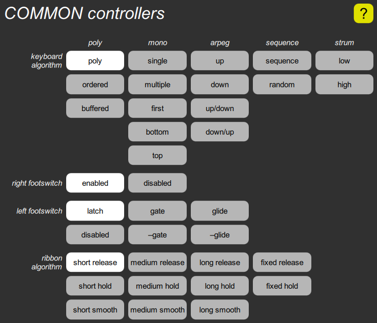

COMMON controllers cluster

This contains several parameters that select various input modes.
The keyboard algorithm has sixteen choices, including various polyphonic, monophonic, arpeggiated, sequenced, and strum algorithms. The default choice is the first one, the basic polyphonic mode.
The footswitch mode parameter is shown as two sets of buttons, one to enable or disable the sustain footswitch, the other to choose from the various modes of the left footswitch.
The ribbon algorithm determines how the value generated by the optional ribbon controller is affected by touching, sliding, and releasing.